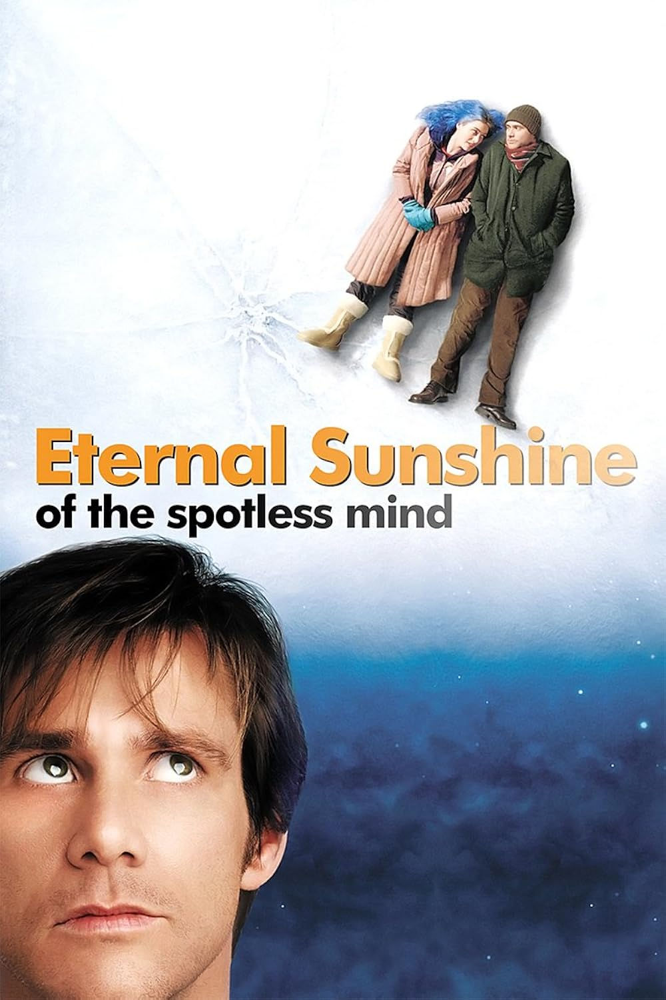

Eternal Sunshine of the Spotless Mind
The movie "Eternal Sunshine of the Spotless Mind", directed by Michel Gondry and written by Charlie Kaufman, is a mix of romance, science fiction, and drama.
It tells the story of Joel, played by Jim Carrey, and Clementine, played by Kate Winslet, who fall in love but eventually break up. Heartbroken, they each decide to have a medical procedure that erases their memories of one another. As Joel's memories begin to fade, he realizes he doesn't actually want to lose them, even if they are painful.
This movie is worth watching because it is very different from typical love stories. Most romance films show either happy endings or predictable heartbreak, but Eternal Sunshine digs deeper into the meaning of love and memory. The idea of erasing someone from your mind seems strange at first, but it makes you think about how people try to deal with sadness in real life. Everyone has wished they could forget someone at some point, and this movie explores what would really happen if you could.
The acting also makes the movie stand out. Jim Carrey, who is usually known for his comedic acting roles, plays Joel in a quiet, serious way that feels very real. Kate Winslet's character, Clementine, is the opposite; she's energetic, bold, and unpredictable. Their personalities clash, but that's what makes their relationship all the more believable. The supporting cast, including Kirsten Dunst and Mark Ruffalo, adds even more to the story.
Visually, the film is creative and memorable. Instead of using special effects, Gondry relies on clever camera tricks and dreamlike scenes to show Joel's memories being erased. Rooms disappear, people fade away, and familiar places break apart. These moments make you feel like you're actually inside his mind, losing pieces of your life.
What makes this movie powerful, though, is its message. It shows that love is not always easy or perfect, but it's still worth experiencing. Even though Joel and Clementine hurt each other, their memories also hold joy, laughter, and connection. The movie suggests that pain is part of what makes love meaningful, and trying to erase it might also erase the good.
Overall, Eternal Sunshine of the Spotless Mind is worth watching because it's emotional, creative, and it makes you think. It makes you reflect on your own relationships and memories, leaving you with the idea that even heartbreak has value.

Filed under Romance, Sci-Fi